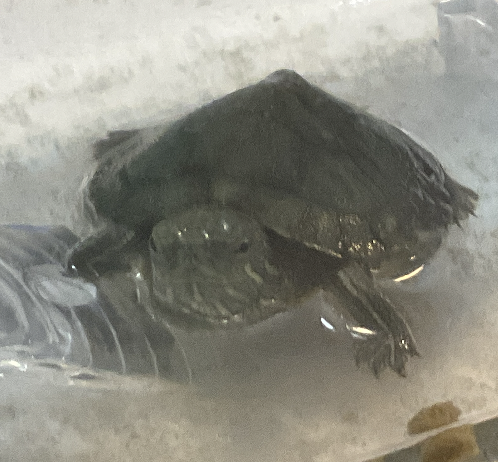
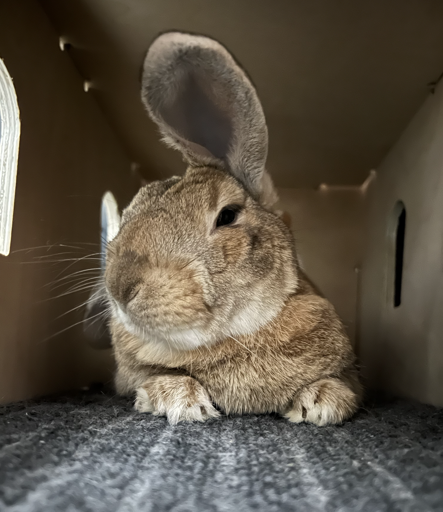
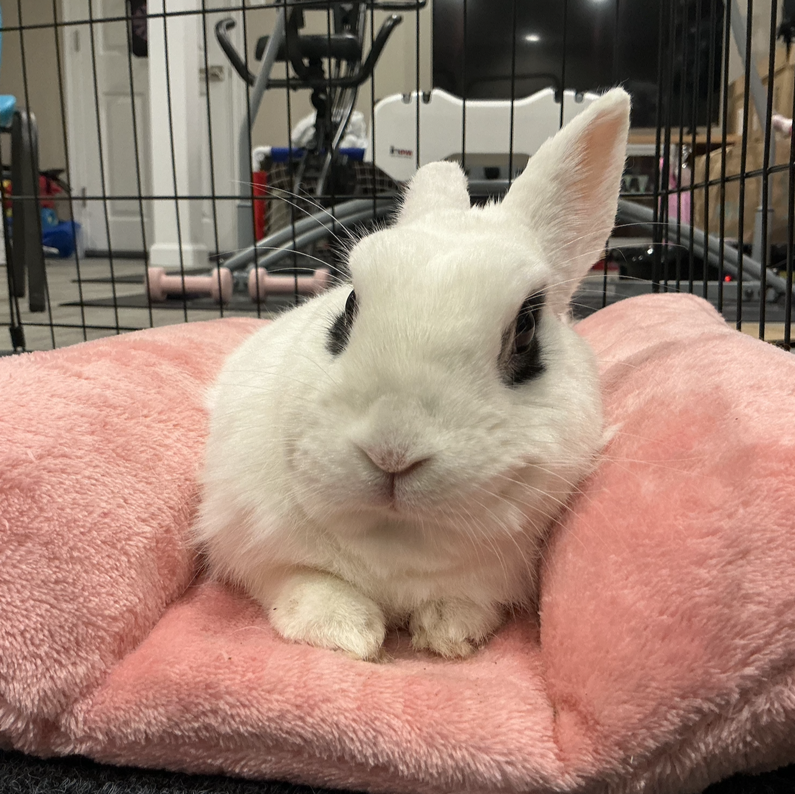

Welcome to the MyPets page! This is
where you can see the latest updates and features!
Hello, my name is Ethan! I am currently 12 years old
and I have a big dream: to help pet care worldwide.
One of my pets is named Bun-Bun.
She is a dwarf hotot which derives
from the more popular Blanc de Hotot,
which is from France. She is currently 5 years old,
and for the summer Bun-Bun and my grandma are going
to stay over at my house.
My cousins also have another bunny named Mochi.
While I don't know her actual place of origin,
her gray fur makes it clear that she is somewhat
of a European mix.
Additionally, I had the following pets before in my life:
For my company I aim to get the following animals:
As I previously said in the first section, my goal for this company
is to help people take care of pets better. Unlike other apps, the
interface and features are supposed to be both adult and child friendly.
Currently, the first app, MyBunny, has finally been completed, and is on hold for verification and testing.
While you are waiting, you can check out the MyBunny Discord server, or give advice
in the thread I put out in the RabbitsOnline forum.
The rest of the apps will be on hold until MyBunny is verified and tested, as I want to make
sure that the first app is fully functional and working properly before moving on to the next one.
Features include: